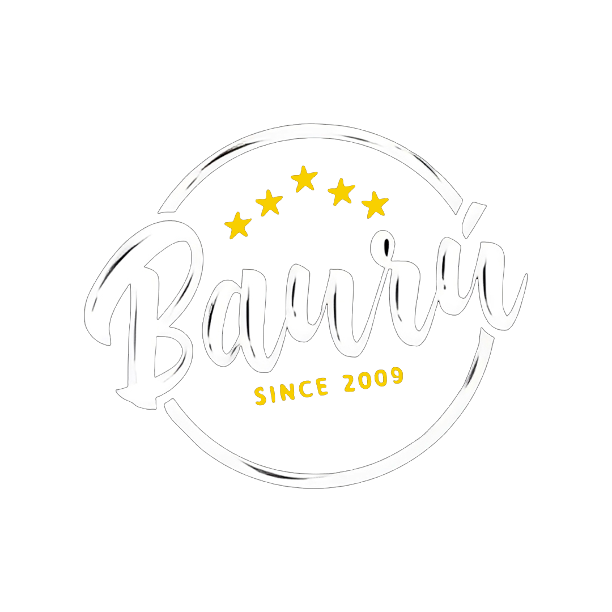
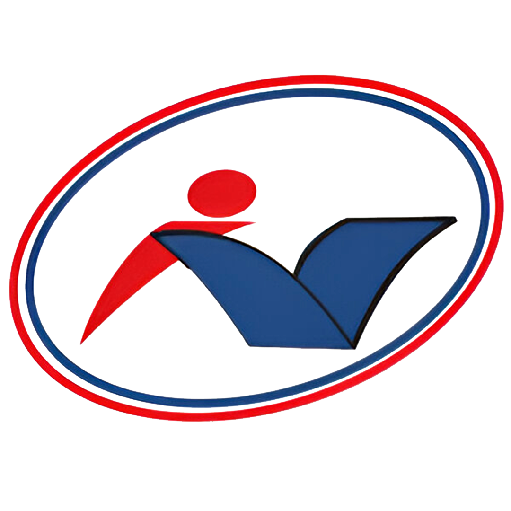
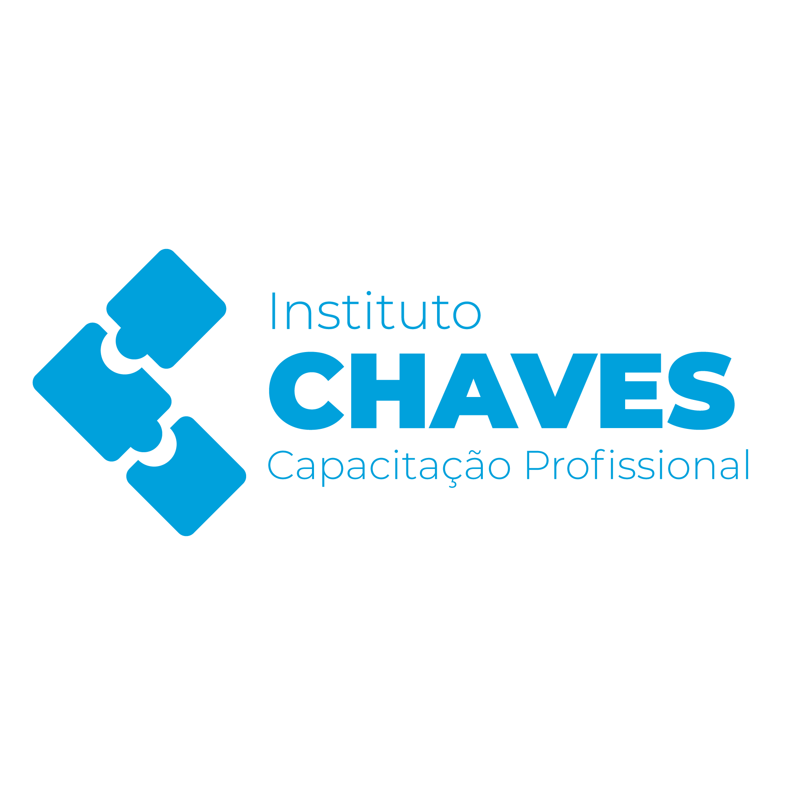
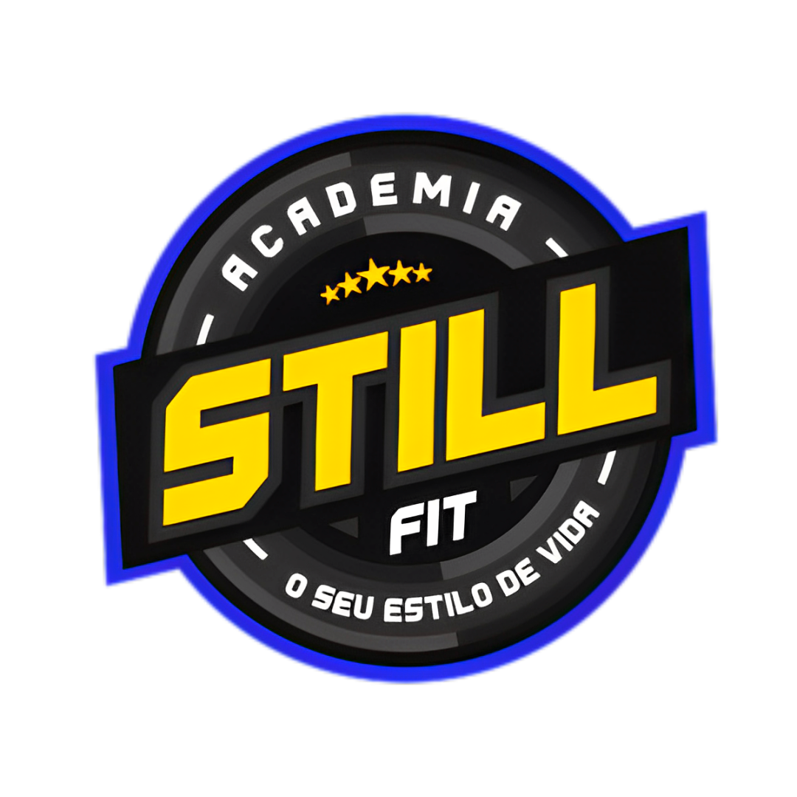
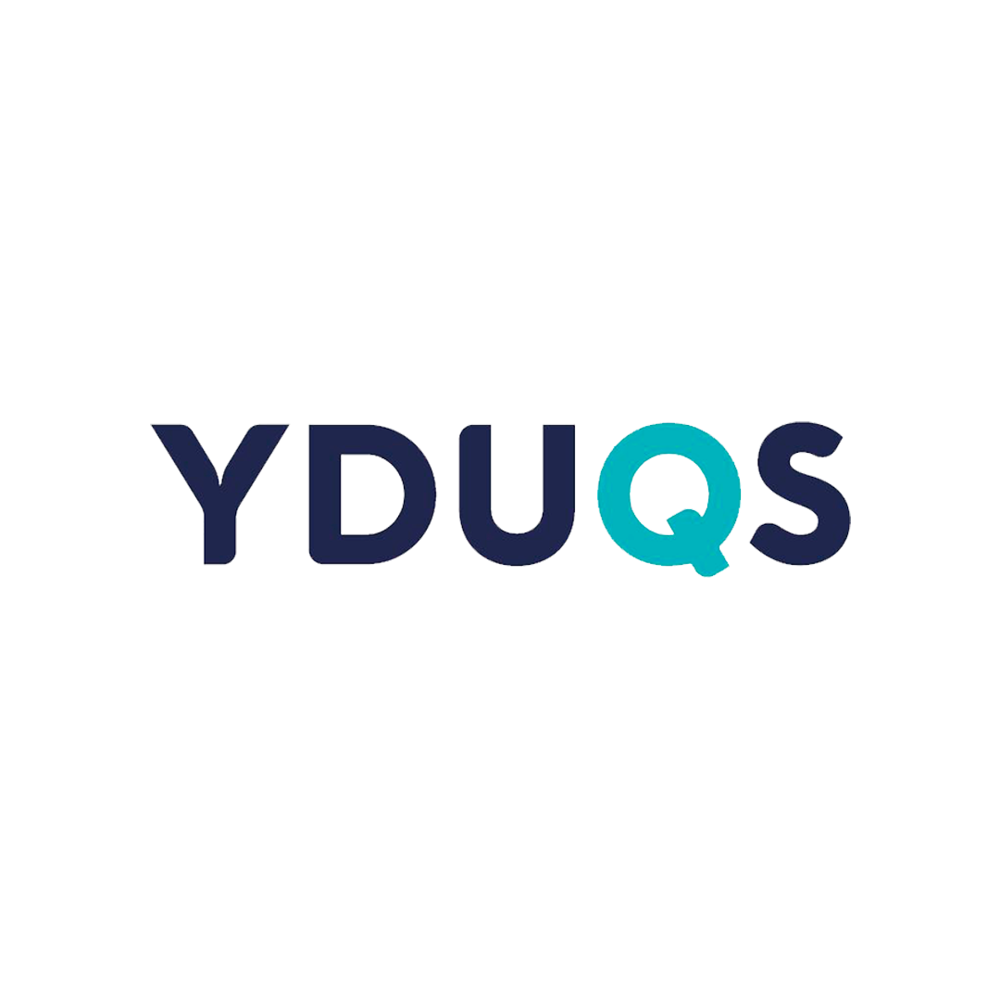

ARU BONSAI

BAURÚ

BEM BRASIL

COLÉGIO NOGUEIRA MINEIRO
CHAVES CAPACITAÇÃO

INSTITUTO CHAVES

MASTERSON
PREFEITURA DE DUQUE DE CAXIAS

STILL FIT

GRUPO YDUQS
Nossos Patrocinadores: Parceiros na Transformação
Nosso agradecimento especial a todos os patrocinadores que apoiaram nossa Caminhada!
Com a ajuda dessas empresas incríveis, conseguimos ampliar nosso projeto e alcançar mais de pessoas.
Sabemos que enfrentar o estigma, promover o diálogo aberto e oferecer amparo emocional é um desafio complexo. É por isso que essa parceria é tão essencial: juntos, criamos uma rede de apoio que salva vidas e inspira esperança.
Responsabilidade social transforma o mundo, e é uma honra ter patrocinadores tão engajados nessa missão.
Muito obrigado por caminharem ao nosso lado nessa causa tão importante.